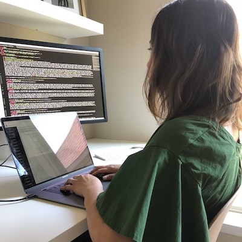

This is my family ️❤
james
ethan
will
jack
I entered the tech field 5 years ago while living in San Francisco
I taught myself basic html & css and began building websites for friends and family while working full-time. I also took some free part-time coding classes and eventually landed an upaid web development job. A couple of months later, I was hired as a web developer at Gap Inc. It was dream come true but it was a lot of work & stress as I litterally had to learn on the job. Fortunately, my colleages and manager were incredibly supportive and wanted me to succeed.
A year later, we moved to Houston. I now work remotely as an ebook developer. It's mostly mark-up work, but we have the opportunity to create internal tools to automate the development process. I've created a couple of scripts for our team using JS and Node.JS but I still have a lot of learning gaps.
After the bootcamp, I hope to:
- Help my team by building more automation scripts
- Work on personal passion projects
- Find a new tech positon that best suits my skill-set and passion.
Besides coding, I love:
making stuff
discovering new food spots
camping
Catan

coffee
hiking